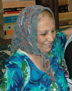

|
|

خبر کوتاه بود و دردناک : مادر محبوبه کرمی پس از آزادی وی درگذشت
چهار شنبه19 فروردین 1388
تغییر برای برابری - یک روز پس از آزادی محبوبه کرمی، 19 فروردین، صدیقه مصائبی مادر محبوبه در بیمارستان درگذشت.
پس از تودیع کفالت 50 میلیون تومانی برای محبوبه کرمی، عصر روز گذشته وی آزاد شد و بلافاصله پس از آزادی برای دیدن مادرش مستقیم به بیمارستان ایران مهر رفت . مادر محبوبه که از بیماری سرطان در رنج بود ، پس از بازداشت محبوبه و 11 فعال جنبش زنان در بیمارستان بستری شد و با آن که برادر محبوبه از وخامت وضعیت مادرش به دادیار پرونده گفته بود و تقاضای آزادی او را کرده بود با قبول کفالت او مخالفت شد و محبوبه به همراه خدبجه مقدم در زندان ماند .
در این ایام، دوستان محبوبه در کمپین و همچنان مادران کمپین و صلح به نوبت درکنار محبوبه بودند. صبح امروز این مادر مقاوم و رنج دیده پس از آخرین دیدار با دخترش درگذشت.
تاب و تحمل برای محبوبه گرامی و برادرش آرزومندیم.
مراسم خاکسپاری مادر محبوبه صبح پنجشنبه 20 فروردین برکزارمی شود. مراسم ختم او نیز روز جمعه 21 فروزدین از ساعت 4 تا 6 بعد ازظهر در منزل آن مرحوم برگزار می شود.
نشانی : انتهای خیابان کمیل، نرسیده به خیابان هرمزان ، پلاک 1107
شهلا فروزانفر از مادران صلح شعری را برای مادر محبوبه سروده است که می خوانید:
تقدیم به مادر محبوبه
مادری جان داد 
دردی به جانش بود
از دوری فرزند؛ درد به زخمی جانسوز بدل شد
در تب عشق جانش می سوخت
رحم و مروت کجا پنهان بودند؟
علم پزشکی از این درد به زانو درآمد
آه از دل این مادران
گویی شرر عشق فرزند در دلهاشان جادودانه است
مادرم منزل نو مبارک !
فرزندم گریه نکن
زین پس تمام مادران این دیار مادرت خواهند بود.